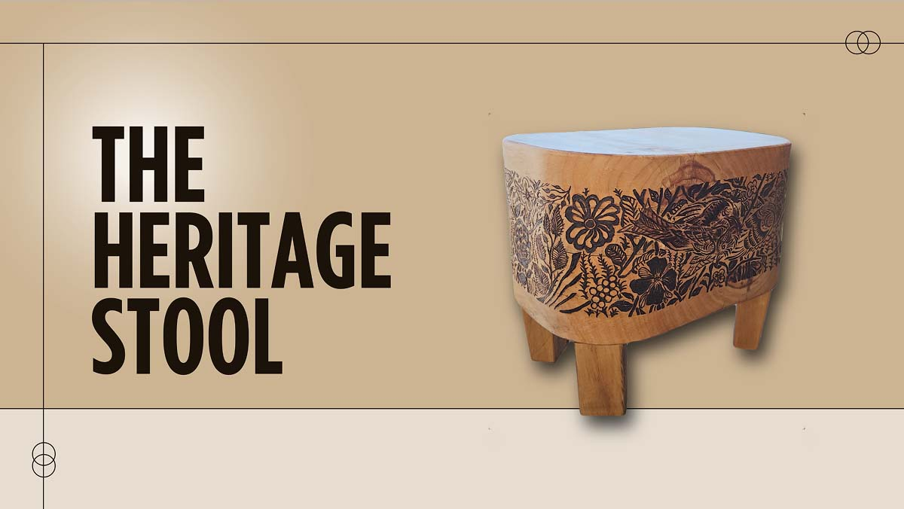

A handcrafted design that honors tradition and challenges mass production
The Heritage Stool was created as a functional yet symbolic piece of furniture, designed to serve everyday household needs while celebrating the value of craftsmanship. The piece blends cultural storytelling with rugged utility, rejecting minimalist mass-produced trends in favor of authenticity, symbolism, and personal connection.
The design process began with a visual exploration of handcrafted joinery and ancestral Asian furniture forms. I sketched various silhouettes emphasizing bulk and strength, with storage functionality incorporated into the central body. A recurring goal was to make the stool feel personal and storied — something passed down, not thrown away.
Crafted entirely in Pandorosa pine wood using mortise-and-tenon joinery, the stool’s construction emphasizes durability and longevity. Its slightly oversized form gives it a grounded, permanent presence in any home. A carved-out middle compartment provides simple utility as a small storage bin.
What sets the stool apart is the intricate wood-burned motif carved into its surface. Inspired by traditional Chinese paper cuttings, the pattern nods to heritage and the human hand in every step of the process. This intentional imperfection celebrates warmth and personal history in a way no CNC router could replicate.
This project challenged me to slow down, think like a craftsperson, and focus on making every mark count. In resisting automation and perfection, I learned to value the narrative embedded in each piece of wood — from grain to burn mark. The Heritage Stool is a testament to physical storytelling through design.